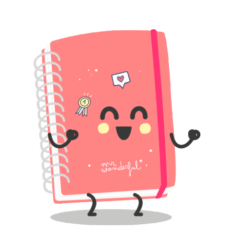

| Consejos para la escuela |
| En casa |  |
En la escuela |
Consejo 1: Llevar un calendario Pareciera más tedioso pero no lo es, creeme que te ayudará a organizarte de una mejor manera. |
|  | Consejo 2: Elaborar una agenda Si la primera opción se te hace mucho. Está es perfecta, es muy sencillo elaborar una agenda, no quiere decir que debas comprar una, en realidad puedes hacerla con cualquier libreta. |
Consejo 3: No dejes todo a último momento Si algo he aprendido a la mala es que dejar todo para el último día nunca es buena idea por varios motivos,entregas un trabajo feo y mal hecho o no lo acabas a tiempo. |
| Consejo 4: Entender a los profesores Nos gusta mucho quejarnos por que nos dejan muchas tareas y trabajos. Pero también debemos entender a nuestros docentes. Si nosotros nos estresamos con el montón imaginate ellos que van a calificar y evaluar a 8 grupos de 30 alumnos cada uno aproximadante. Ellos soportan alrededor de 200 alunmos y no quejamos por 11 trabajos de 11 maestros. |